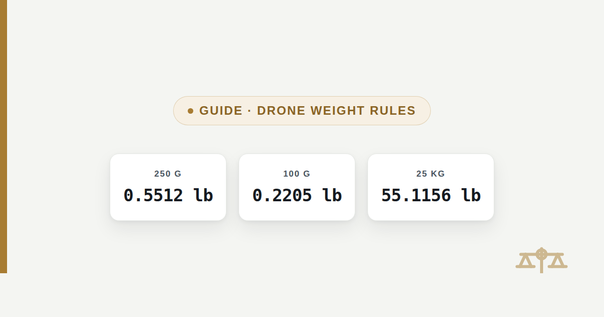

Drone Weight: 250 Grams to Pounds for FAA Registration
The FAA requires registration at 250 grams (0.5512 pounds) and up. The UK, Canada and Australia set their own thresholds — this page converts each one and cites the source.

A 250 gram drone weighs 0.5512 pounds, or 8.82 ounces — the exact figure the US Federal Aviation Administration uses as its registration threshold. This page converts that figure and the other weight thresholds that US, UK, Canadian and Australian regulators use, so a spec sheet listed in grams can be checked against a rule written in pounds.
The quick answer
250 grams equals 0.5512 pounds (8.82 ounces), and that is the weight at which the FAA requires most drones to be registered before their first flight. The regulation itself, 14 CFR § 48.15, states the line as 0.55 lb, which converts to 249.48 grams — in practice, manufacturers and pilots treat 250 g as the round-number threshold, and a drone at exactly 250 g is already at or past it.
Drone weight chart: grams to pounds
The table below covers the weight range most consumer and prosumer drones fall into, from ultralight sub-250 g models to heavier camera drones. Each row is calculated from the exact conversion factor of 453.59237 grams per pound.
| Grams (g) | Pounds (lb) | Pounds & ounces |
|---|---|---|
| 100 g | 0.2205 lb | 0 lb 3.53 oz |
| 200 g | 0.4409 lb | 0 lb 7.05 oz |
| 249 g | 0.5490 lb | 0 lb 8.78 oz |
| 250 g | 0.5512 lb | 0 lb 8.82 oz |
| 300 g | 0.6614 lb | 0 lb 10.58 oz |
| 500 g | 1.1023 lb | 1 lb 1.64 oz |
| 900 g | 1.9842 lb | 1 lb 15.75 oz |
| 1,200 g | 2.6455 lb | 2 lb 10.33 oz |
| 2,000 g | 4.4092 lb | 4 lb 6.55 oz |
| 5,000 g | 11.0231 lb | 11 lb 0.37 oz |
| 20,000 g | 44.0925 lb | 44 lb 1.48 oz |
| 25,000 g | 55.1156 lb | 55 lb 1.85 oz |
For any drone weight not listed here, the grams to lbs converter gives an exact figure at 2, 4 or 6 decimal places.
What counts toward a drone's registration weight
A drone's registration weight is its complete ready-to-fly weight, including the battery, propellers, and any attached accessories such as a camera, gimbal guard, or landing light. The FAA states this explicitly: the comparison is against the aircraft as it will actually fly, not the bare airframe weight printed on a box. This matters because a drone advertised as "sub-250 g" using its standard battery can cross the threshold the moment a heavier optional battery, propeller guard, or strobe light is attached.
Standard battery: 242 g airframe + battery → under 250 g
+ propeller guards (14 g) → 256 g → over 250 g
256 ÷ 453.59237 = 0.5644 lb (9.03 oz)
result → now above the FAA registration threshold
+ propeller guards (14 g) → 256 g → over 250 g
256 ÷ 453.59237 = 0.5644 lb (9.03 oz)
result → now above the FAA registration threshold
US, UK, Canada and Australia thresholds compared
The United States, Canada, and (until recently) the UK all used 250 grams as their drone registration line, but the UK lowered its threshold to 100 grams effective 1 January 2026 — the figures are not interchangeable across borders, and a drone legal to fly unregistered in one country can require registration in another.
| Country / regulator | Threshold | In pounds |
|---|---|---|
| United States (FAA) | 250 g (0.55 lb) | 0.5512 lb |
| United Kingdom (CAA) | 100 g, effective 1 Jan 2026 | 0.2205 lb |
| Canada (Transport Canada) | 250 g to 25 kg registration band | 0.5512 lb to 55.1156 lb |
| Australia (CASA) | 250 g (commercial registration applies at any weight) | 0.5512 lb |
In the United States, a drone under 250 g flown purely for recreation is exempt from FAA registration, though airspace restrictions and state laws still apply regardless of weight. In the United Kingdom, the Civil Aviation Authority now requires a Flyer ID for any drone at or above 100 g, and an Operator ID as well if that drone carries a camera. In Canada, Transport Canada requires both registration and a drone pilot certificate for any drone between 250 g and 25 kg. In Australia, the Civil Aviation Safety Authority currently does not require recreational drone registration at any weight, but commercial operation requires CASA registration regardless of the drone's weight. None of this is legal advice; each regulator's own published guidance, linked in the sources below, is the current authority on its own rules.
Real drone weights near the threshold
Several popular consumer drones are built specifically to land just under 250 g, illustrating how close to the line a real product can sit. A drone listed at 249 g converts to 0.5490 pounds (8.78 ounces), just under the FAA's 0.55 lb line, while the same airframe with a heavier optional battery attached can weigh 267 g, which converts to 0.5886 pounds (9.42 ounces) and crosses the threshold. The lesson for reading any drone's spec sheet is the same one covered above: check the "with battery" or "ready to fly" weight, not the lightest configuration listed, and convert that number rather than the marketing headline.
267 ÷ 453.59237 = 0.5886 lb
whole pounds → 0 lb
0.5886 × 16 = 9.42 oz
result → 0 lb 9.42 oz, over the 0.55 lb / 250 g line
whole pounds → 0 lb
0.5886 × 16 = 9.42 oz
result → 0 lb 9.42 oz, over the 0.55 lb / 250 g line
Frequently asked questions
Do I need to register a drone that weighs under 250 grams?
In the United States, no, if the drone is flown purely for recreation: the FAA exempts recreational drones under 250 grams (0.55 lb) from registration under the Exception for Limited Recreational Operations. Flying the same drone commercially removes that exemption, and registration is required regardless of weight. Airspace rules and Remote ID requirements can still apply to a sub-250 g drone even without registration.
How many pounds is the FAA’s 250 gram drone limit?
250 grams converts to 0.5512 pounds, or 8.82 ounces. The regulation itself, 14 CFR § 48.15, is written as 0.55 lb, which is technically 249.48 grams — in practice, 250 grams is the round number used across the industry as the threshold.
What weight does the FAA actually measure for drone registration?
The FAA measures the drone’s complete ready-to-fly weight, including the battery, propellers, and any attached accessories like a camera or propeller guard. A drone marketed as under 250 grams with its lightest battery can exceed that weight once a heavier optional battery or accessory is attached, at which point registration becomes required.
Is the UK drone weight threshold the same as the US?
No. The US FAA threshold is 250 grams (0.5512 pounds), but the UK Civil Aviation Authority lowered its threshold to 100 grams (0.2205 pounds), effective 1 January 2026. A drone that needs no registration in the US can require a UK Flyer ID, and an Operator ID as well if it has a camera.
Does Canada use the same 250 gram threshold as the US?
Canada uses the same lower bound: Transport Canada requires registration and a drone pilot certificate for any drone weighing between 250 grams (0.5512 pounds) and 25 kilograms (55.1156 pounds). Below 250 grams, Transport Canada does not require registration or a pilot certificate.
What happens if my drone weighs slightly over 250 grams?
Crossing 250 grams (0.5512 pounds) in the US moves a recreational drone out of the sub-250 g exemption, meaning it must be registered with the FAA before its next flight, marked with the registration number, and in most cases broadcast Remote ID. The same crossing has similar effects in Canada and the UK, though each country’s specific requirements differ, as covered above.
Sources
- Federal Aviation Administration, How to Register Your Drone — 250 g / 0.55 lb registration threshold
- 14 CFR § 48.15, Code of Federal Regulations — defines the 0.55 lb (250 g) lower weight bound for the FAA small unmanned aircraft registration rule
- UK Civil Aviation Authority, The Drone Code — 100 g Flyer ID threshold in effect from 1 January 2026
- Transport Canada, Drone Safety guidance — 250 g to 25 kg registration and pilot certificate band
- Civil Aviation Safety Authority (CASA) Australia, drone rules guidance — commercial registration required regardless of weight; recreational registration currently paused